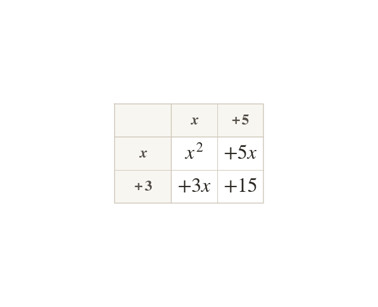

Four products from two brackets
Every term in the first bracket multiplies every term in the second. So has four products.
Every term in the first bracket multiplies every term in the second. So has four products, one in each cell of the grid.